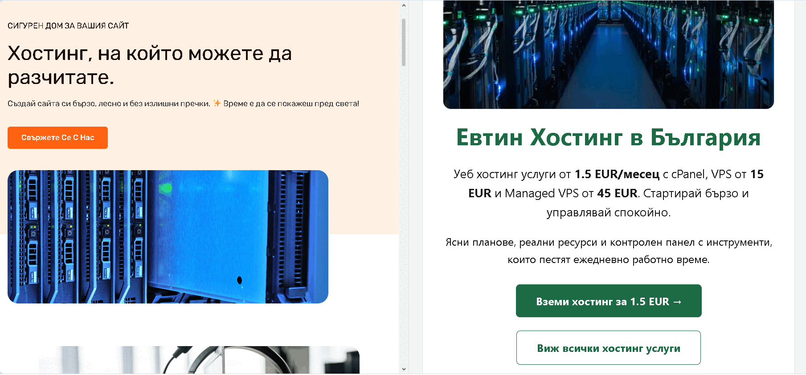
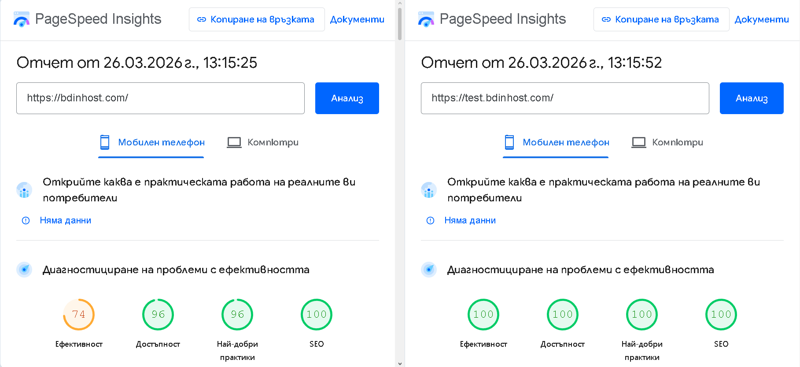
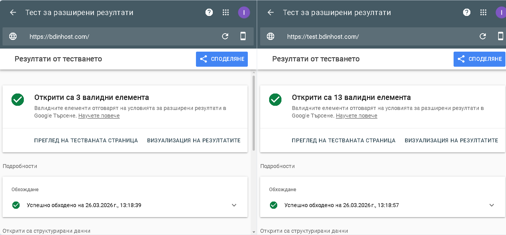

WordPress за Малък Бизнес: Цена, Риск и По-добра Алтернатива
Време за четене: ~5 минути
📅 Публикувано: • Актуализирано: • От: MOVER Studio
Ако имаш малък бизнес, почти сигурно вече си чувал съвета: "Направи си WordPress сайт – най-лесно е."
За много малки бизнеси WordPress може да е добро начало, но в дългосрочен план не винаги е най-икономичният избор.
Ако обмисляш изработка на WordPress сайт за малък бизнес, важно е да знаеш не само първоначалната фирмен сайт цена, но и реалните разходи за поддръжка, както и какво всъщност получаваш за парите си при създаването на нов уебсайт за фирма.
WordPress се ползва от над 40% от интернет според публичната статистика на W3Techs за CMS пазарен дял. Звучи убедително. Но въпросът не е дали платформата е популярна, а дали е правилният инструмент за твоите специфични цели.
В тази статия ще разгледаме реалността – кога WordPress има смисъл и кога по-опростен вариант може да е по-подходящ. Ако търсите професионална изработка на сайт за малък бизнес, изборът на технологията още на старта е едно от най-важните решения, които ще вземете.
Ако целта ти е повече запитвания, а не повече поддръжка, прочети тази статия докрай. В края има и директен следващ ход към по-лек и по-продаващ сайт.
Кога WordPress наистина има смисъл
Нека бъдем честни – WordPress е отличен инструмент за определени случаи:
- За блогове и медийни сайтове: Ако публикувате статии и новини всяка седмица.
- За онлайн магазини: С WooCommerce платформата може да управлява сложни плащания и хиляди продукти.
- За сайтове с ежедневни промени: Ако екипът ви трябва да сменя банери и цени постоянно, без да зависи от разработчик.
Всички тези случаи изискват постоянна активност. Сега нека видим каква е реалността за стандартния малък бизнес.
Проблемът при малкия бизнес
Повечето бизнеси – счетоводни кантори, строителни фирми или козметични салони – имат нужда от сайт, който просто да показва услугите им и контактите. Те не променят съдържанието си ежедневно. За тях WordPress често добавя допълнителна сложност и текущи разходи, които не винаги носят реална възвръщаемост.
Ако искаш по-малко разходи и повече яснота
Изпрати ни кратко запитване и ще ти кажем директно дали HTML е по-логичното решение за твоя бизнес и какъв старт има смисъл.
Реалните недостатъци на WordPress
1. Постоянна техническа поддръжка
WordPress изисква ежемесечни обновления на ядрото, темата и плъгините. Ако те се пропускат, рискът от проблеми със сигурността или с визуалната стабилност на сайта се увеличава.
2. Зависимост от плъгини
За всяка допълнителна функция често се добавя плъгин. При повече разширения е възможно да се появят конфликти, което да натовари сайта и да усложни поддръжката.
3. Скорост и Google PageSpeed
Скоростта е важен фактор за потребителското изживяване и SEO, особено през призмата на Core Web Vitals и оценките в Google PageSpeed Insights. Типичните резултати често изглеждат така:
| Тип технология | PageSpeed (мобилен) | Време за зареждане |
|---|---|---|
| WordPress (без оптимизация) | 40-65 | 3-6 секунди |
| WordPress (оптимизиран) | 70-90 | 2-4 секунди |
| Оптимизиран HTML сайт | 90-100 | под 1 секунда |
4. Скритата цена (Годишен бюджет)
WordPress изглежда достъпен, но ето какви са реалните разходи за 1 година за един среден сайт за малък бизнес. Ако сравнявате оферти, вижте и нашия калкулатор за изработка на фирмен сайт:
| Разход | Сума (приблизително) |
|---|---|
| Хостинг (оптимизиран за WP) | €77-€153 |
| Лицензи за премиум тема и плъгини | €82-€179 |
| Техническа поддръжка и сигурност | €153-€307 |
| Общо на година | €312-€639 |
Кога WordPress НЕ ти трябва
Ако отговаряш с "ДА" на тези точки, WordPress може да не е най-подходящият избор за теб, особено ако целта ти е по-добра SEO оптимизация и по-висока видимост в Google:
- Сайтът е предимно презентационен (портфолио, услуги, контакти).
- Не планирате да публикувате ново съдържание по-често от веднъж месечно.
- Нямате нужда от сложен онлайн магазин.
- Искате по-ниски текущи разходи и по-малко регулярна поддръжка.
Реално сравнение: WordPress vs HTML
За честно сравнение използвахме две версии на един и същ проект в една и съща BDinHost хостинг среда, със сходно съдържание и без допълнителна оптимизация извън стандартната настройка на всеки вариант.
Това не означава, че WordPress не може да бъде бърз - но обикновено изисква допълнителна оптимизация, време и поддръжка, за да стигне до същото ниво.



По-простият и бърз вариант
За бизнеси, които ценят скоростта и по-опростената поддръжка, предлагаме изработка на сайт без WordPress. Този подход често дава:
- PageSpeed 90-100: Бързите сайтове обикновено се представят по-добре технически.
- По-малка attack surface: Без плъгин слой и база данни, които да поддържате.
- Ниски текущи разходи: Обикновено плащате основно за домейн и хостинг.
- Еднократна инвестиция: Без задължителни месечни абонаменти за CMS поддръжка.
Ако искате професионален фирмен сайт, който не изисква вашето внимание всеки месец, статичният HTML е логичното бизнес решение. За реални примери вижте и наши case studies с реални резултати.
Кога не трябва да избереш нас
Честният отговор е, че HTML сайтът не е правилният избор за всеки. Ако ти трябва по-гъвкава редакция и растеж на съдържанието, WordPress може да е по-подходящ.
- Ако искаш сам да редактираш сайта си често и без помощ от разработчик, WordPress е по-удобен.
- Ако планираш блог, новини или чести публикации, WordPress обикновено е по-добрият инструмент.
- Ако сайтът ти ще се развива динамично с нови секции и много съдържание, CMS подходът е по-логичен.
- Ако искаш много редактори и силна CMS екосистема, WordPress дава повече възможности.
Ние сме добър избор, когато целта е бърз, лек и сравнително прост бизнес сайт. Когато бизнесът изисква постоянни промени и редакции, има по-подходящи решения.
Не продаваме WordPress или HTML. Продаваме правилното решение за вашия бизнес.
Следващи стъпки
→ Изчислете цената на вашия нов сайт тук – нашият калкулатор ще ви даде точна оферта веднага.
→ Вижте повече за услугата изработка на сайт – процеси, срокове и примери.
→ Разгледайте как постигаме 90-100 PageSpeed за бизнес сайтове – технически подход и измерими резултати.
→ Искаш ли сайт без поддръжка? Пиши ни и ще ти кажем честно дали HTML или WordPress е по-правилният избор за твоя бизнес.
Често задавани въпроси
Колко струва WordPress сайт за малък бизнес?
Цената за изработка варира между €153 и €767, но реалната тежест често идва от годишните разходи за сигурност и актуализации, които могат да добавят още стотици евро.
Мога ли сам да поддържам WordPress сайт?
Да, ако имате технически познания и отделяте по 1-2 часа месечно за бекъпи и мониторинг. В противен случай рискувате стабилността на бизнес присъствието си.
Защо HTML сайтът е по-бърз?
HTML сайтът не изисква време за обработка от сървъра – той се доставя на потребителя много бързо, което често е предимство за потребителското изживяване и техническото SEO. Може да проверите и официалното ръководство на Google за базови SEO практики.
Накратко: WordPress е мощен инструмент, но не е универсално решение. За много малки бизнеси по-простият сайт носи повече резултати с по-малко разходи.